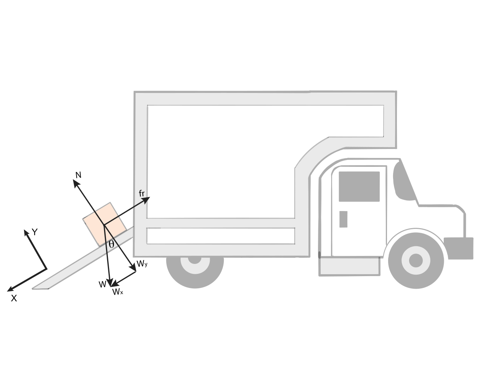

A box of $4$ kilograms initially at rest starts to slide over the ramp of a truck. After $2$ seconds, the box is moving with a $0.2 \, \text{m}/\text{s}$ speed. The angle between the ramp and the floor is $30^\circ$. What is the coefficient of dynamic friction between the ramp and the block?
\section{Solution}
In order to determine the coefficient of dynamic friction, we need to find a relation between that coefficient and the other variables we know. Notice that the coefficient of friction partially determines the force of friction, and the force of friction plays a role in the acceleration of the block along the inclined plane (we can easily find this acceleration because we know the initial and final speeds after two seconds). Thus, in order to find a relation between the coefficient of dynamic friction and the acceleration, we need to consider Newton's Second Law.
As it is usual for problems with inclined planes, we will use a system of coordinates where the X axis points in the direction of the ramp, and where the Y axis is perpendicular to the ramp, as illustrated here (this kind of system has the benefit that most of the forces and the acceleration are aligned with the axes, and so we do not need to find their components):
FIGURE SYSTEM OF COORDINATES
Next, we make a force diagram. There are two forces along the Y axis. One is the normal force, that points in the positive Y direction, and the other one is the Y-component of the weight. Along the X axis, we have two forces, the force of friction that opposes the motion of the box (and so points in the negative X direction) and the X-component of the weight, that points in the positive X direction. Thus, the force diagram is the following one:

An image from a random physics problem.
We now write Newton's Second Law in the X-axis. As it is clear from the force diagram, there are two forces in X, the X-component of the weight (positive in X) and the friction (negative in X), and so we get
\begin{equation}
W_x \, \hat{\textbf{\i}} - f_r \, \hat{\textbf{\i}} = m a_x \, \hat{\textbf{\i}},
\label{CajaFriccion_fuerzasX}
\end{equation}
where $a_x \, \hat{\textbf{\i}}$ is the acceleration of the box, whose direction is along the positive X axis. We have enough information to find this acceleration, for we know the change of speed after 2 seconds. However, let's find its value a bit later.
One can see from the force diagram that $W_x$ is given by $W \sin \theta$ (recall that $W=mg$). And we also know that the magnitude of the dynamic force of friction is given by $\mu N$, where $N$ is the magnitude of the normal force and $\mu$ is the coefficient of dynamic friction that we know. Thus, equation \eqref{CajaFriccion_fuerzasX} becomes
\begin{equation}
\underbrace{(mg \sin \theta)}_{W_x}\, \hat{\textbf{\i}} - \underbrace{(\mu N)}_{f_r} \, \hat{\textbf{\i}}= m a_x \, \hat{\textbf{\i}}.
\label{CajaFriccion_fuerzasXReemplazando}
\end{equation}
Since the acceleration in X is constant, it is given by
\begin{equation}
\frac{(v_{f} \, \hat{\textbf{\i}} - v_i \, \hat{\textbf{\i}})}{t} = a_x \, \hat{\textbf{\i}},
\end{equation}
where $v_f$ is the final speed after time $t$ and $v_i$ is the initial speed. Since $v_i$ is zero because the box starts from rest, we get
\begin{equation}
\frac{v_f}{t} \, \hat{\textbf{\i}}= a_x \, \hat{\textbf{\i}}.
\end{equation}
Let's then use this in equation \eqref{CajaFriccion_fuerzasXReemplazando}:
\begin{equation}
mg \sin \theta \, \hat{\textbf{\i}} - \mu N \, \hat{\textbf{\i}}= m \underbrace{\frac{v_f}{t}}_{a_x} \, \hat{\textbf{\i}}.
\label{CajaFriccion_fuerzasXConAceleracion}
\end{equation}
Now, from this equation we cannot yet find $\mu$ because we do not know $N$ (but we know $t$, $v_f$, $m$ and $\theta$). Thus, we need to write the force equation along the Y axis.
In the Y axis, the block is at rest (it only moves along X). Also, the normal force is positive and the Y-component of the weight is negative. Thus, Newton's Second Law along the Y axis is
\begin{equation}
N \, \hat{\textbf{\j}} - W_y \, \hat{\textbf{\j}} = 0 \, \hat{\textbf{\j}}.
\label{CajaFriccion_FuerzasY}
\end{equation}
But from the force diagram, we can see that $W_y$ is given by $mg \cos \theta$ ($W=mg$). So, equation \eqref{CajaFriccion_FuerzasY} becomes
\begin{equation}
N \, \hat{\textbf{\j}} - \underbrace{(mg \cos \theta)}_{W_y} \, \hat{\textbf{\j}} = 0 \, \hat{\textbf{\j}}.
\end{equation}
If we move $mg \cos \theta$ to the other side, and if we focus only on the magnitudes, we find that \begin{equation}
N = mg \cos \theta.
\label{CajaFriccion_Normal}
\end{equation}
Let us use this result in equation \eqref{CajaFriccion_fuerzasXConAceleracion}. We get
\begin{equation}
mg \sin \theta \, \hat{\textbf{\i}} - \mu \underbrace{(mg \cos \theta )}_{N}\, \hat{\textbf{\i}} = m \frac{v_f}{t} \, \hat{\textbf{\i}}.
\end{equation}
The only unknown variable here is $\mu$. Thus, let us leave the term with $\mu$ in the left and move the other terms to the right:
\begin{equation}
- \mu mg \cos \theta \, \hat{\textbf{\i}}= m \frac{v_f}{t} \, \hat{\textbf{\i}}- mg \sin \theta \, \hat{\textbf{\i}}.
\end{equation}
Now, let us focus on the magnitudes and divide everything by $-m g \cos \theta$;
\begin{equation}
\mu = - \frac{v_f}{t g \cos \theta} + \tan \theta,
\end{equation}
where the mass cancels everywhere and where we used that $\sin \theta / \cos \theta= \tan \theta$.
Finally, let us replace the values of all the terms:
\begin{equation}
\mu = - \frac{\overbrace{(0.2\; \text{m/s})}^{v_f}}{\underbrace{(2\; \text{s})}_{t} \underbrace{(9.8\; \text{m/s}^2)}_{g} \cos \underbrace{(30^\circ)}_{\theta}} + \tan \overbrace{(30^\circ)}^{\theta},
\end{equation}
to get
\begin{equation}
\mu = 0.56.
\end{equation}